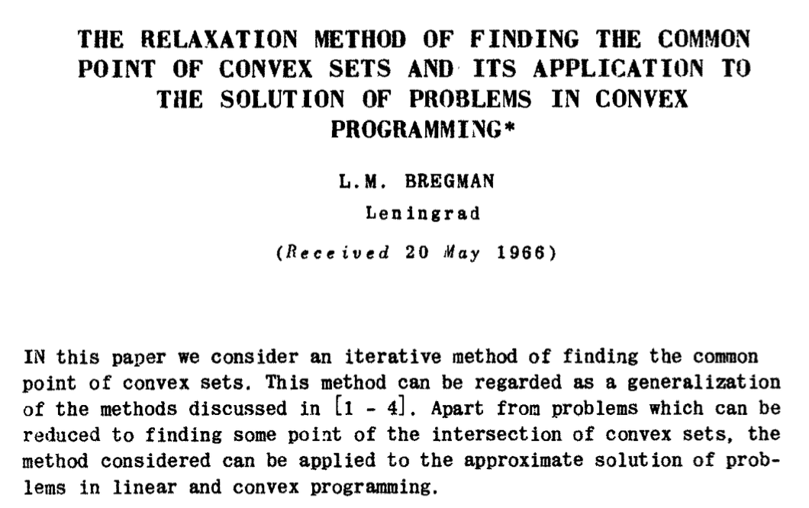
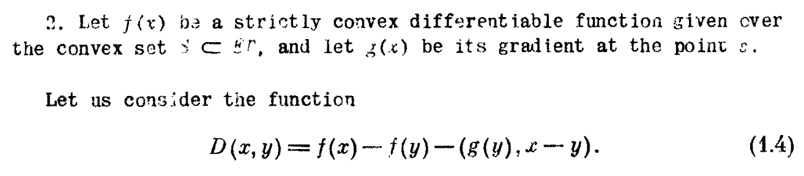
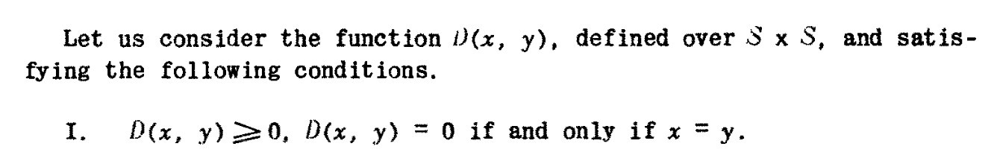
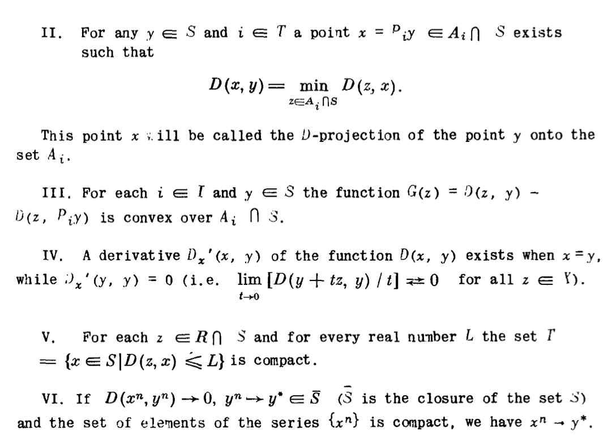

Bregman divergences are a widely used mathematical concept in machine learning that are more commonly discussed
in academic papers, but can be challenging to understand for those encountering them for the first time.
These divergences are significant because of their usefulness in many areas of machine learning such as
clustering and matrix approximations.
However, the formalism-heavy Wikipedia page on Bregman divergences may not be the most accessible
resource for beginners. With this in mind, this page aims to provide a comprehensive and easy-to-understand
introduction to Bregman divergences. It will cover their definition, derivation, and useful properties,
while also discussing the role they play in machine learning. Additionally, interactive graphs will be
provided to enhance understanding.
History
The Bregman divergence first appeared in a paper on solutions to convex
programming problems.

Appearing first in the section below.

The definition of a Bregman divergence (retrospectively named such) was defined
in equation (1.4) as a result of trying a function that satisfied the
conditions below.


We will go deeper into some of these properties later in the article.
Motivation and Derivation
The motivation for studying Bregman divergences comes from the idea of trying to
generalise the definition of squared Euclidean distance to a larger class of
distances that share the same properties. Alongside this, as we will see later
Bregman divergences have strong ties to applications in probability, machine
learning and clustering.
With this motivation in mind we will first generalise the
squared Euclidean distance(SED) between two points to a Bregman Divergence. Given two
points \( x,y \in \, \mathbb{R}^n \) the SED is:
$$d^2(x,y):=\sum_{i=1}^{n} (x_i - y_i)^2 $$
We can rewrite the definition of the
SED in terms of the inner product (\( \langle x,y \rangle = \sum_{i=1}^{d} x_iy_i \) ).
$$d^2(x,y):=\sum_{i=1}^{n} (x_i - y_i)^2 = \langle x-y,x-y \rangle $$
Then after some manipulation we get.
$$d^2(x,y) = \langle x-y,x-y \rangle = \mid\mid x \mid\mid^2 -
\mid\mid y \mid\mid^2 - \langle 2y,x-y \rangle $$
And after noticing that \( \frac{d}{dy}||y^2|| = 2y \) we can now rewrite the
equation in terms of the derivative of a function namely \( f(x)=x^2\)
$$d^2(x,y) = f(x) - (f(y) + \langle\nabla f(y),x-y\rangle) $$
After comparing to bregman's paper below we see that the definitions do indeed
match and therefore SED is a bregman divergence!
This also lends itself to a particularly nice geometrical interpretation if we
realise that \( f(y) + \langle\nabla f(y),x-y\rangle \) is the tangent line of f
at y.
Handily, if we state explicitly that our distance measure must be non-negative
we can redefine our distance measure as
$$D_{\mathbb{f}}(x||y):=d^2(x,y) = f(x) - (f(y) + \langle\nabla f(y),x-y\rangle) \geq 0$$
This tells us that function must lie above the tangent line for all \(x,y\)
and gives the following inequality.
$$f(x) \geq f(y) + \langle\nabla f(y),x-y\rangle $$
Which is precisely the definition, assuming the function is appropriately
differentiable, the definition of a convex function.
Exploration of the formal definition
The complete definition of a bregman divergence is presented below
·let F : \( \Omega
\rightarrow \mathbb{R} \) is continuously differentiable &
strictly convex function on the convex set \(\Omega\) with two n-dimensional
points \(x,y \in \Omega\) ·
\( F(x) - (F(y) + \langle\nabla F(y),x-y\rangle) \) ·The difference
between the function evaluated at x and the first order Taylor approximation
of F around y evaluated at x
A function \(\mathbb{f}\) is said to be continuously differentiable if its derivative
exists and is itself a continuous function.
A function such that any straight
line between any pair of points
on the curve is above the curve excluding the intersection of the line and the
curve.
The definition of strict convexity is a function such that any straight
line between any pair of points
on the curve is above the curve including the intersection of the line and the
curve.
Properties of Bregman Divergences:
Below we will explore some of the key mathematical properties of Bregman divergences
making them a useful generalisation of many existing loss/distance functions.
We note the definition of a Bregman Divergence, from before, as: Let \( \mathbb{f}:
\mathcal{S} \rightarrow \mathbb{R} \) be a strictly convex, differentiable function
defined on a convex set \( \mathcal{S} = dom(f) \subseteq \mathbb{R}^d \) and let
\( d_{f}: \mathcal{S} \; \times \; ri(\mathcal{s}) \rightarrow [0, \infty ] \) be
its corresponding bregman divergence i.e \( d_{f}(x||y) = f(x) - f(y) = \langle
\nabla f(y), x-y \rangle \).
\[\]
The non-negativity property; defined as \[d_{f}(x||y) \geq 0, \forall x \in
\mathcal{s}, \forall y \in ri(\mathcal{s}). \] is useful because
it ensures that the distance between any two points is always greater zero or
equal to zero when the values are the same. It is useful because it transforms
the bregman divergence into a 'distance-like' measure rather than just a dissimilarity measure.
In particular it can be used to create regularisation terms that penalise 'distance'
of a solution from a reference point/distribution or enforce structure on your solution. It also allows Bregman Divergences
to provide a notion of convergence for a sequence of points \( x_k \).
The sequence of divergences \( d_f(x_k,x) \rightarrow 0 \) implying x
that x is a minimizer of the objective function associated with \( \mathbb{f} \).
See "Mirror descent and nonlinear projected subgradient methods for convex optimization" by Beck, A. and Teboulle, M., 2003. ,
for proving convergence of a gradient descent based algorithm.
Bregman Divergences are linear operators, i.e \( \forall x \in \mathbb{s},
\forall y \in ri(\mathcal{s}) \; \& \;\alpha \in \mathbb{R} \)
\[
d_{f_{1}+f_{2}}(x||y)=d_{f_{1}}(x||y)+d_{f_{2}}(x||y), \newline
d_{\alpha f}(x||y) = \alpha d_{f}(x||y).
\]
This is a useful property because it allows optimisation problems that involve
linear constraints or linear objective functions to be solved using optimization
frameworks that leverage the convexity and linearity of Bregman divergences
for its convergence and efficiency.
Bregman Divergences have the desirable property that generator functions differing
only in affine terms (\( f(x) = \mathrm{A}x + b \)) i.e, \(f(x)=f_{0}(x)+\langle
b,x \rangle + c, \; b \in \mathbb{R}^d \; \& \; c \in \mathbb{R} \) and then
\[d_f(x||y) = d_{f_{0}}(x||y), \; \forall x \in \mathbb{s},
\forall y \in ri(\mathcal{s})
\] then the set of all bregman divergences can be broken down into Equivalence
classes of the form:
\[
[f_0] = \{f \,| \, d_{f}(x||y)=d_{f_0}(x||y), \; \forall x \in \mathbb{s},
\forall y \in ri(\mathcal{s}\}.
\]
This is a useful property because by partitioning the set of strictly convex,
differentiable functions into equivalence classes based on their bregman divergences
we can simplify many optimisation problems by only considering one divergence from each class.
Bregman Divergences can guarantee the existence of linear separators, because
the the locus of points equidistant from two fixed points under a bregman
divergence is a hyperplane i.e,
\[
d_f(x||\mu_1)=d_f(x||\mu_2)
\]
The linear separation property is useful because it enables the use of efficient
optimization algorithms, such as support vector machines (SVMs), which rely
on the existence of linear separators. SVMs are a popular machine learning
technique that can be used for binary classification tasks, where the goal
is to separate two classes of data points using a hyperplane.
General Bregman Divergence Plots:
Below is a widget that will test the convexity of a function and if the function
is of form \(f: \mathbb{R} \rightarrow \mathbb{R}\) the accompanying bregman plots will be displayed.
For some examples of generator functions and accompanying domains click here.
Please enter your continuous function of class \(f:\mathbb{R}^n \rightarrow \mathbb{R}\)
The function must have a second derivative that exists for computational tractability
Inputted Equation:
Generator Function:
Bregman Divergence:
Common Loss Functions:
Below are some commonly found bregman divergences, to see them plotted click
on the function name of generator you want to inspect.
Function Name
Generator \(f(x)\)
Domain
Divergence \(D_{f}(x||y)\)
Divergence Name
\(x^2\)
\(\mathbb{R}\)
\((x-y)^2\)
Squared Loss
\(xlog(x)-x\)
\([0,\infty)\)
\(xlog(\frac{x}{y})-x+y\)
Kullbach-Liebler Divergence
\(e^x\)
\(\mathbb{R}\)
\(e^x-(x-y+1)*e^y\)
Exponential Loss
\(-log(x)\)
\((0,\infty)\)
\(\frac{x}{y}-log(\frac{x}{y})-1\)
Itakura-Saito Distance
\(x*log(x)-(1-x)*log(1-x)\)
\([0,1]\)
\(xlog(\frac{x}{y})-(1-x)log(\frac{1-x}{1-y})\)
Logistic Loss
\(log(1+e^x)\)
\(\mathbb{R}\)
\(xlog(x)-(1-x)log(1-x)\)
Dual Logistic Loss
\(-\sqrt{1-x^2}\)
\([-1,1]\)
\((1-xy)(1-y^2)^{-1/2}-(1-x^2)^{1/2}\)
Hellinger
Applications of Bregman Divergences:
Bregman divergences are used to measure the dissimilarity between two probability distributions as such some examples of applications of Bregman divergences include:
\( \textbf{Clustering}\): Bregman divergences can be used to define the dissimilarity between different clusters, which can then be used in algorithms such as k-means clustering.
\( \textbf{Image compression}\): Bregman divergences can be used to measure the dissimilarity between an original image and a compressed version of the image, which can be used to optimize the compression algorithm.
\( \textbf{Machine learning}\): Bregman divergences can be used as loss functions in machine learning algorithms, such as in the optimization of neural networks.
\( \textbf{Recommender systems}\): Bregman divergences can be used to measure the dissimilarity between different users' preferences and can be used to make personalized recommendations.
\( \textbf{Signal processing}\): Bregman divergences can be used in signal processing to measure the dissimilarity between a signal and a compressed version of the signal, which can be used to optimize the compression algorithm.
Exploring Bregman Enhanced Clustering:
When knowledge about the underlying problem setting or distribution of data is known in advance.
Clustering algorithms can be made shown to perform more accurately when
utilising bregman divergences to create dissimilarity measures that model
underlying data more accurately.
Below we will explore how K-means
clustering can perform better on data sampled from non-normal distributions
with adapted distance/centroid functions. A Brief Refesher on the K-means
Algorithm is provided below.
Assume there are \( K\) groups.
For each group \(k \in \{1,...,K\}\) assume a group mean \( \mathbf{\mu}_{k} \)
Aim: Partition data points \( \mathbf{x}_i,...,\mathbf{x}_n \) into \(K\) non-overlapping groups
Each of the \(n\) data points \(\mathbf{x}_i \) is assigned to exactly one of the \(K\) groups.
Maximise the homogeneity within each group (i.e. each group should contain similar objects).
Maximise the heterogeneity between the different groups (i.e each group should differ from the other groups).
After running K-means we will get estimates of
\( \hat{\mu}_k\) of the group means, as well allocations
\( y_i \in \{1,..,K\}\) of each data point \( \mathbf{x}_i \) to one of the classes.
At the start of the algorithm the \(n \) observations
\( \mathbf{x}_1,...,\mathbf{x}_n \) are randomly allocated
with equal probability to one of the \(K \) groups. The resulting assignment is
\(y_1,...y_n\), with each\(y_i \in \{1,..K\}\). With \( G_k=\{i|y_i=k\}\)
we denote the set of indices of the data points in cluster
\(k\), and with \(n_k = |G_k|\) the number of samples in cluster.
Estimate the group means, with a centroid
combiner function.
Update the group allocations, with a specified
dissimilarity measure. Specifically, assign each data point
\(x_i\)to the group \(k\) with the nearest \(\hat{\mu}_k\).
\[y_i=\underset{k}{\mathrm{argmin}}\;D_f(\hat{\mu}_k||x_i)\]
Steps 1 and 2 are repeated until the algorithm converges
(i.e. until the group allocations don’t change any more) or until
a specified upper limit of iterations is reached.
Some specific examples of Centroid Combiner/dissimilarity Measure
combinations and their respective dual exponential family probability
distribution are shown below. The centroid combiner and associated dissimilarity
measure can be directly plugged into the K-means algorithm.